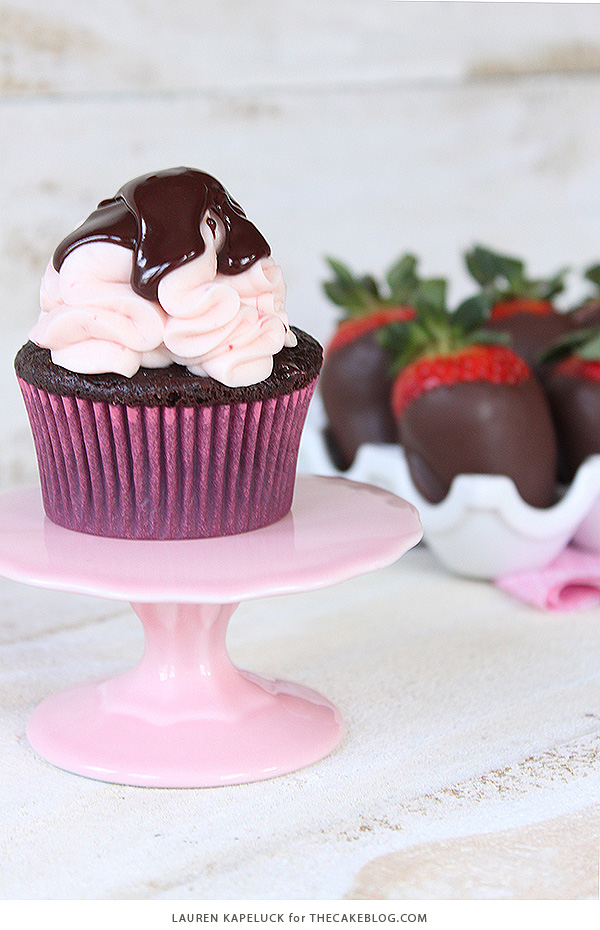

The below is a list of cupcakes in our menu;
The butterbeer cupcake is essentially a brown sugar cupcake infused with cream soda and butter flavors.The cupcakes are then filled with a butterscotch ganache,topped with a rich butterscotch butterscream,and drizzled with more butterscotch ganache.The buttercream is sweet,but not teeth-fall-out sweet.
Chocolate covered strawberry cupcakes are moist chocolate cupcakes topped with fluffy strawberry cream cheese frosting and a drizzle of chocolate ganache.
The Churro Cupcakes are moist cinnamon spiced cupcakes topped with a luscious vanilla buttercream and garnished with a crspy baked churro.They are positively divine for any serious cinnamon lover, and they have the same churro taste in a sweet and fluffy cupcake i.e Irresistible!!
The Sangria Cupcakes are made with fruit in the batter and a red wine buttercream, these are the perfect party cupcakes!!They can be a great start to a relaxing weekend.